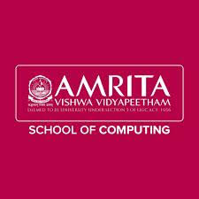

Amrita school of computing

The Amrita School of Computing at the Coimbatore campus of Amrita Vishwa Vidyapeetham is a premier hub for technical education, offering specialized, industry-focused programs in Artificial Intelligence, Data Science, and Computer Science engineering. The school is led by a team of experienced academics, with Dr. Vidhya Balasubramanian serving as the Principal and Professor. Supported by a robust research environment and accredited with an 'A++' grade by NAAC, the Amrita School of Computing focuses on high-impact research in areas such as cybersecurity, computer vision, and machine learning, preparing students for leadership roles in the global technology landscape.
Within the school, the Department of Computer Science and Engineering (CSE) provides a comprehensive curriculum designed for innovation. Key leadership positions within these departments in Coimbatore include Dr. Bagavathi Sivakumar P, who serves as a Chairperson and Associate Professor, along with several vice-chairpersons. The school offers a diverse range of undergraduate and postgraduate programs, including B.Tech in AI and Data Science, and is renowned for producing graduates who are highly sought after by top industry recruiters.
THE LABS PRESENT IN AMRITA ARE
THE COMPANIES THAT HAVE APPEARED FOR RECRUITMENT ARE